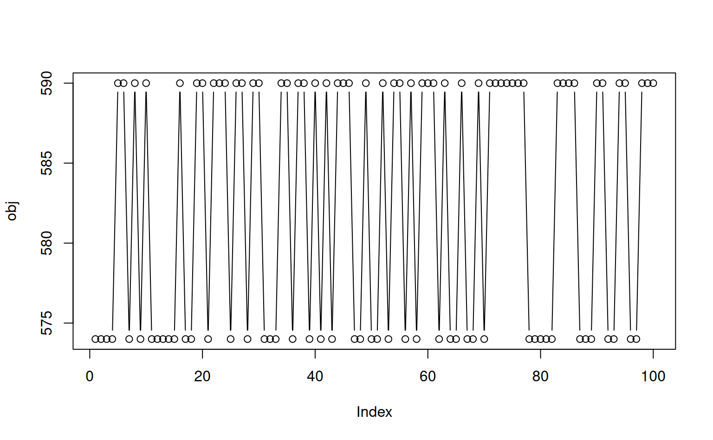
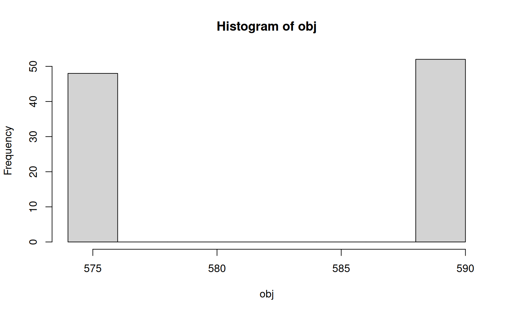

R/iterateHydOrder.R
iterateHydOrder.RdIteratively Attempt Hydrologic Ordering of Geomorphic Proportion Matrix
iterateHydOrder(
x,
g,
target = 0.9,
maxIter = 20,
j.amount = 0.05,
verbose = FALSE,
trace = FALSE
)data.frame geomorphic proportion matrix, as created by soilDB::fetchOSD(..., extended=TRUE)
name of geomorphic summary table, one of: c('geomcomp', 'hillpos', 'flats', 'terrace', 'mtnpos', 'shape')
numeric, target match rate
integer, maximum number of perturbations of geomorphic probability matrix
numeric, amount of noise applied to rows with too few unique values, passed to jitter()
logical, additional output printed via message
logical, additional list of results for each iteration
A list with the following elements:
clust: rotated hclust object
hyd.order: vector of series names, in hydrologic ordering
clust.hyd.order: vector of series names, after clustering + rotation, approximate hydrologic ordering
match.rate: fraction of series matching target hydrologic ordering, after clustering + rotation
obj: objective function value (sum of squared rank differences), used by iterateHydOrder()
niter: number of iterations
trace: list of results by iteration, only when trace = TRUE
This function is used by the suite of geomorphic proportion visualization functions (viz*) to attempt rotation of a dendrogram according to "hydrologic ordering" rules. A perfect rotation is not always possible, and reported as a match rate in the returned score value
# example data, similar to results from soilDB::fetchOSD(..., extended = TRUE)
data("OSDexamples")
# single iteration of hydrologic ordering
h1 <- hydOrder(OSDexamples$hillpos, g = 'hillpos', clust = TRUE)
# perform several iterations, keep the best one
h2 <- iterateHydOrder(OSDexamples$hillpos, 'hillpos', verbose = TRUE)
#> 11.8% match rate after 20 iterations
# compare: only slightly better match rate achieved
h1$match.rate
#> [1] 0.05882353
h2$match.rate
#> [1] 0.1176471
# return trace log for eval of objective function
# increase max iterations
h2 <- iterateHydOrder(OSDexamples$hillpos, 'hillpos', maxIter = 100, verbose = TRUE, trace = TRUE)
#> 11.8% match rate after 100 iterations
# inspect objective function evolution
tr <- h2$trace
obj <- sapply(tr, '[[', 'obj')
plot(obj, type = 'b')

hist(obj)

# in this case the clustering of hillpos proportions has only two possible configurations